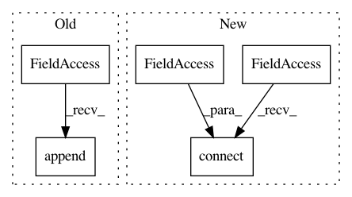

33df51090d17cd2d79655f24ed8a6c426bce7d43,ilastik/applets/dataSelection/dataSelectionGui.py,DataSelectionGui,_initTableViews,#DataSelectionGui#,152
Before Change
addOneMenu.addAction( "Select File..." ).triggered.connect( partial(self.handleAddFiles, roleIndex) )
addOneMenu.addAction( "Specify Stack..." ).triggered.connect( partial(self.handleAddStack, roleIndex) )
detailViewer.addOneButton.setMenu( addOneMenu )
self._retained.append(addOneMenu)
addManyMenu = QMenu()
addManyMenu.addAction( "Select Files..." ).triggered.connect( partial(self.handleAddFiles, roleIndex) )
addManyMenu.addAction( "Give Pattern..." ).triggered.connect( partial(self.handleAddByPattern, roleIndex) )
After Change
self.laneSummaryTableView.addStackRequested.connect( self.handleAddStack )
self.laneSummaryTableView.addByPatternRequested.connect( self.handleAddByPattern )
self.removeLaneButton.clicked.connect( self.handleRemoveLaneButtonClicked )
self.laneSummaryTableView.removeLanesRequested.connect( self.handleRemoveLaneButtonClicked )
self._retained = [] // Retain menus so they don"t get deleted
self._detailViewerWidgets = []
for roleIndex, role in enumerate(self.topLevelOperator.DatasetRoles.value):
In pattern: SUPERPATTERN
Frequency: 3
Non-data size: 5
Instances
Project Name: ilastik/ilastik
Commit Name: 33df51090d17cd2d79655f24ed8a6c426bce7d43
Time: 2013-04-23
Author: bergs@janelia.hhmi.org
File Name: ilastik/applets/dataSelection/dataSelectionGui.py
Class Name: DataSelectionGui
Method Name: _initTableViews
Project Name: ilastik/ilastik
Commit Name: 315f3a2e2386f938cb0e77c8185107c4964c4e41
Time: 2013-04-22
Author: bergs@janelia.hhmi.org
File Name: ilastik/applets/dataSelection/dataSelectionGui.py
Class Name: DataSelectionGui
Method Name: _initTableViews
Project Name: ilastik/ilastik
Commit Name: b71c79b8bb87791082c23837e472d97a7bfab712
Time: 2012-11-16
Author: bergs@janelia.hhmi.org
File Name: ilastik/applets/labeling/labelingGui.py
Class Name: LabelingGui
Method Name: _addNewLabel